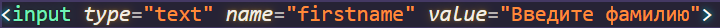

ОБЩЕЕ ОПИСАНИЕ
HTML формы являются элементами управления, которые применяются для сбора информации от посетителей веб-сайта. Веб-формы состоят из набора текстовых полей, кнопок, списков и других элементов управления, которые активизируются щелчком мыши. Технически формы передают данные от пользователя удаленному серверу. Для получения и обработки данных форм используются языки веб-программирования, такие как PHP, Perl.
СОЗДАНИЕ ФОРМЫ
Форма начинается с парного тега <form></form>. Тег <form> удерживает все элементы управления формы, которые также называются полями. Атрибуты этого элемента содержат информацию, общую для всех полей формы, поэтому в одну форму нужно включать поля, объединенные логически.
- Атрибут name. Значение этого атрибута означает имя HTML формы.
- Атрибут action. Значение этого атрибута отвечает за путь к файлу скрипта, который будет обрабатывать форму. То есть мало ввести данные в форму, их же ведь ещё нужно соответствующим образом обработать, и вот как раз путь к этому файлу-обработчику и находится в значении атрибута action.
- Атрибут method. У него может быть одно из двух значений: post или get. Этот атрибут определяет способ отправки. Первый способ является скрытой отправкой данных, а второй открытой.
Добавление текстового поля
Добавляется текстовое поле с помощью тега <input>, а точнее с помощью атрибута этого тега type со значением text.
